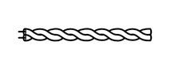
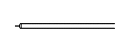

概要
多路通信系统采用 2 个通信协议（CAN 和 LIN）以实现流线型线束配置。
| 协议 | 概要 |
|---|---|
| 控制器区域网络 (CAN) | 高速 CAN (HS-CAN) 用于传动系、底盘和车身电气系统。 |
| 局域互联网 (LIN) | LIN 用于局域网，其中各车身电气系统有各自的 LIN 总线。 |
传动系、底盘和车身电气系统引入了 CAN 通信系统，从而实现了流线型线束配置。
由于这些多路通信系统彼此之间不兼容，CAN 和 LIN 网络无法直接通信。CAN 和 LIN 是独立的网络。因此，一些 ECU 作为网关传送数据，从而允许 CAN 和 LIN 网络之间进行通信。
采用可定制的车身电气系统，可利用 Global TechStream (GTS) 设定 ECU 的某些控制功能。有关详情，请参考修理手册。
一般来说，多路通信是指采用由比特和帧组成的串行通信数据以在各种 ECU 之间交换信息。这减少了车辆使用的配线数量。比特是通信的基本单位，用于表示信息量。比特由二进制数字“0”或“1”表示。CAN 通信采用差分电压驱动表示二进制数字“0”或“1”。该“差分电压驱动”可减小电干扰的影响。
CAN 和 LIN 之间的差异
CAN 和 LIN 用来建立数据通信规则的协议不同。如果网络中的 ECU 采用不同的数据结构，如通信速度、通信线束或信号，则 ECU 之间将不能通信。因此，必须在它们之间建立协议（规则）。
与 LIN 相比，CAN 具有高速数据传输的特点。因此，CAN 能以比其他协议更快的速度传输更多数据。该特点可使其在传动系和底盘控制系统中准确地传输数据。这些系统需要在短时间内传输大量数据。
| 协议 | CAN | LIN |
| HS-CAN | ||
| 通信速度 | 500 kbps* | 9.6 至 20 kbps* |
| 通信线束 | 双绞线 | AV 单线 |
| 驱动类型 | 差分电压驱动 | 单线电压驱动 |
| 数据长度 | 1-8 字节（可变） | 2、4、8 字节（可变） |
*：“bps”是“Bits Per Second”（比特/秒）的缩写，表示每秒可传输的比特数。
双绞线用于 CAN 通信。LIN 通信采用车用乙烯 (AV) 单线。
| 通信线束 | 概要 |
| 双绞线

|
此通信线束为双绞线。对 2 条线施加不同电压以驱动通信，从而发送单个信号。此系统称为“差分电压驱动”，可以降低电噪干扰的影响。 |
| AV 单线

|
这是由包有绝缘层的单芯线组成的轻量化单线通信线束。对这条线施加电压以驱动通信，并且此系统称为“单线电压驱动”。 |